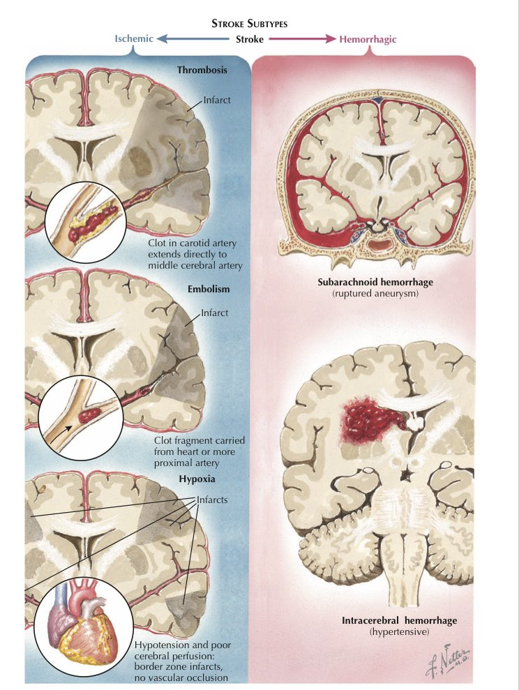
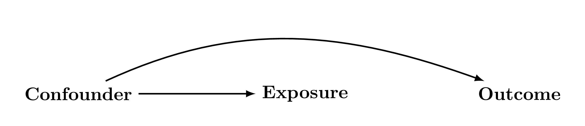
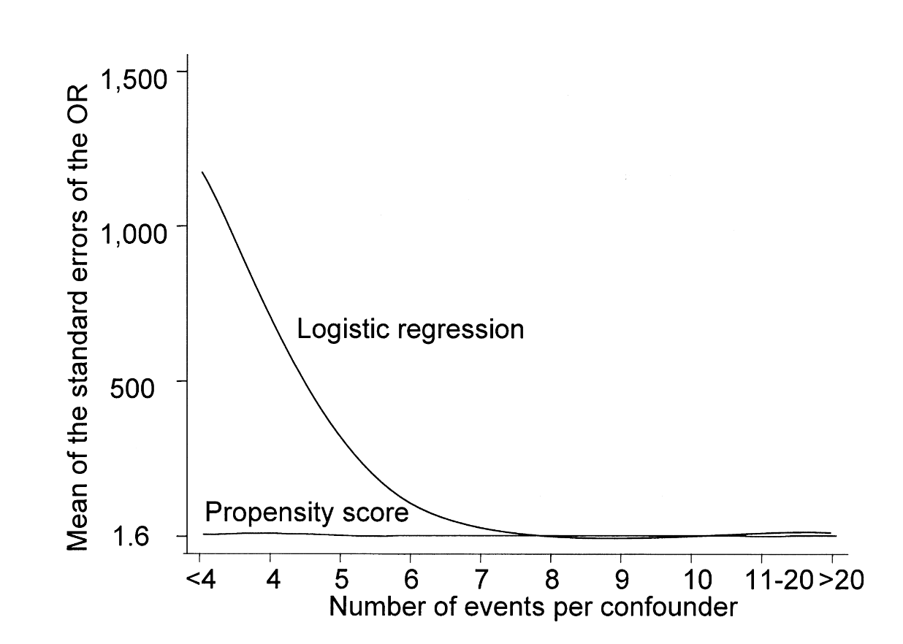
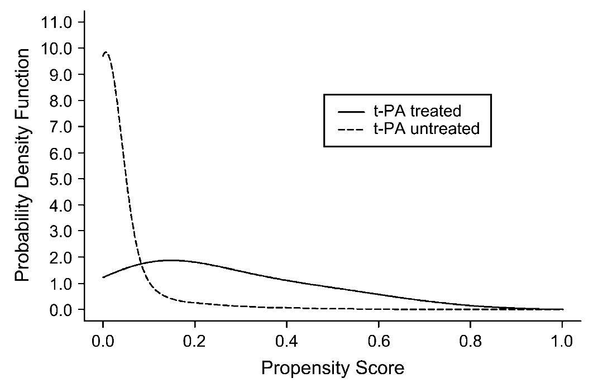

Breakout sessions to practice and use what we are teaching
Will do propensity score analysis, boostrapping, m-estimation
Will use R for coding. RMarkdown Files have been provided for reference
Schedule for the Afternoon
First half
1:10-1:20 Introduction to Clinical Problem
1:20-1:40 First Activity:
Descriptive and Crude Analysis
1:40-2:40 Didactics:
Overview of causal, estimands, propensity score basics
2:40-3:10 Second Activity:
Estimation of ATE and ATT using IPTW
3:10-3:30 Break
Schedule for the Afternoon
Second half
3:30-4:10 Didactics:
Standard Error estimation using Bootstrapping
Standard error estimation using M-estimation
4:10-4:50 Third Activity:
Using Bootstrap and M-estimation
4:50-5:00 Questions and Closing Remarks
Acknowledgments
This workshop uses information from the following resources
HSPH EPI 271 course materials
UNC CH BIOS 776 Causal Notes
What If Casual Textbook by Hernan and Robins
Manuscripts by Kurth et al. 2005, Wiener et al 2025 and Ross et al. 2023
Essential Statistical Inference by Stefanski and Boos
What do you want to get out of this course?
Question of Interest and Background
The Clinical Setup

Two General Types Of Stroke
The Clinical Setup
Tissue plasminogen activatory (t-PA) can breakdown clots and has become a standard of care
Kurth et al. in 2005 found that the effect of TPA in an observational cohort depends on method of confounding control, and when standardized to the whole sample tPA was harmful.
PS distribution also suggested that there specific populations where there might be benefit
Dataset
Westphalian Stroke Registry
Stroke Registry of Northwestern Germany (Qualitätssicherung Schlaganfall Nordwestdeutschland, QSNWD)
Confounder: On a causal path to the outcome AND on a causal path to the exposure AND not caused by the the outcome or exposure.

Methods to control for confounding
Matching
Restriction
Regression Modeling
Weighting
These are all amenable to propensity methods
We will focus on weighting
Propensity Score- Definition
The propensity score is the probability of being in a treatment group conditional on covariates–it is the propensity to be treated
\[P[A=a| \mathbf{L}]\]
where \(A\) is treatment level and \(\mathbf{L}\) is a vector of covariates.
We will denote propensity score as \(\pi(\mathbf{L})\) for simplicity
Propensity score- Exhangeability
The propensity score is a balancing score1. If we have a set of \(\mathbf{L}\) such that \(\left(Y^{0},Y^{1}\right)\perp\!\!\!\perp A \mid \mathbf{L}\) then \[\left(Y^{0},Y^{1}\right)\perp\!\!\!\perp A \mid \pi \left(\mathbf{L}\right)\]
In other words, if \(\mathbf{L}\) represents a vector that contains all variables necessary to achieve exchangeability then the propensity score can provide exchangeability.
How do we determine what should be in \(\mathbf{L}\)?
Model building and variable selection
Like all causal analysis, variable selection should be principled, guided by your estimand, and driven by your DAG
Identify Variables in your DAG that you believe may be confounders.1
where \(\text{logit}=\text{log}\left(\frac{P\left[A=a \mid \mathbf{L}\right]}{1-P\left[A=a \mid \mathbf{L}\right]}\right)\) and \(\text{expit}=\left(\frac{1}{1+\exp^{\alpha_0+\boldsymbol{\alpha}^T\pi\left(\mathbf{L}\right)}} \right)\) in R
#model the logit of being in treatmentmodel<-glm(A~L, data=df, family=binomial(link='logit'))#predict the probability of being in treatment based on covariatesprop_score<-predict(model, type='response')
Advantages
Collapses predictors of treatment into a single value.
avoid curse of dimensionality.1
Relatively easy to estimate.
Multiple uses.

Disadvantages
Still rely on the assumption that you have all variables necessary to achieve exchangeability.
There is no magic here, this is not an RCT
People with same propensity score may have different distribution of covariates.
Adds and extra step to estimation.
Estimation of standard error may be more complex.
Propensity Score Diagnostics
-Distribution of scores
-Overlap
-Trimming?
-Truncation?

Inverse Probability of Treatment Weights
In Epidemiology we are often interested in marginal estimates of effect
To achieve this we often use Inverse Probability of Treatment weights (IPTW)